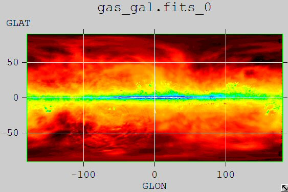
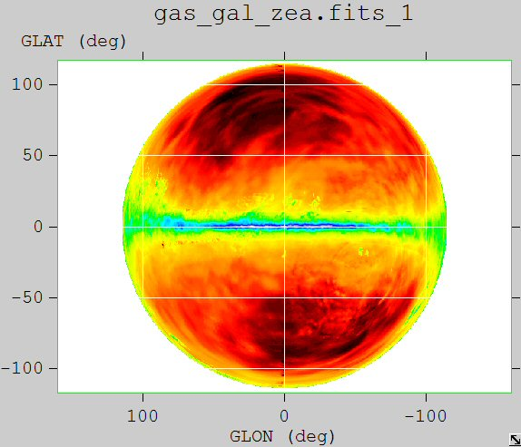
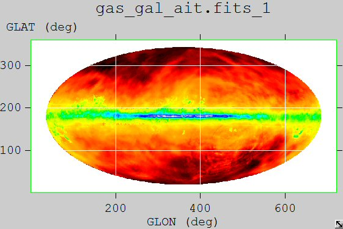
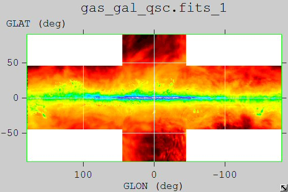

Class SkyProj
Author: Theodore Hierath
Last updated: 28 June 2004
This class acts as a wrapper for WCSLIB, a library written for handling
transformations between celestial and projection coordinate
systems. This is intended to replace the projection capabilities
that were in SkyDir. For celestial coordinates, SkyProj does
input and output in degrees
with the latitude in the range [-90,90] and longitudes in the range
[0,360). This is the same convention that is used in
SkyDir.
SkyProj Constructors and FITS keywords
The constructor for SKyProj takes several parameters which correspond
to FITS keywords. For crpix, crval, and cdelt the convention used
is
that longitude coordinate is specified first. An alternate
constructor
also allows the specification of LONPOLE and LATPOLE.
SkyProj(const std::string
&projName, double* crpix, double* crval, double* cdelt, double
crota2=0, bool galactic=false);
SkyProj(const std::string
&projName, double* crpix, double* crval, double* cdelt, double
lonpole, double latpole, double crota2=0, bool galactic=false);
const std::string &projName
This is a 3 character code that
specifies the projection to use. The allowed values are:
AZP:
zenithal/azimuthal perspective
SZP:
slant zenithal perspective
TAN:
gnomonic
STG:
stereographic
SIN:
orthographic/synthesis
ARC:
zenithal/azimuthal equidistant
ZPN:
zenithal/azimuthal polynomial
ZEA:
zenithal/azimuthal equal area
AIR:
Airy
CYP:
cylindrical perspective
CEA:
cylindrical equal area
CAR:
Plate carree
MER:
Mercator
SFL:
Sanson-Flamsteed
PAR:
parabolic
MOL:
Mollweide
AIT:
Hammer-Aitoff
COP:
conic perspective
COE:
conic equal area
COD:
conic equidistant
COO:
conic orthomorphic
BON:
Bonne
PCO:
polyconic
TSC:
tangential spherical cube
CSC:
COBE quadrilateralized spherical cube
QSC:
quadrilateralized spherical cube
Note: CAR is not the same as cartesian. An empty string for
this parameter corresponds to a simple cartesian transformation.
double* crpix
This two element array corresponds to
the FITS keywords CRPIX1 and CRPIX2. These are the pixel
coordinates of the reference point.
double* crval
This two element array corresponds to
the FITS keywords CRVAL1 and CRVAL2. These are the celestial
coordinates of the reference point.
double* cdelt
This two element array corresponds to
the FITS keywords CDELT1 and CDELT2. These are the coordinate
increments at the location of the reference point.
double lonpole
double latpole
These two parameters
correspond the LONPOLE and LATPOLE. These are the coordinates of
the celestial pole given in native coordinates. If not specified,
WCSLIB sets these automatically.
double crota2
This corresponds to the FITS keyword
CROTA2, which represents a rotation at the reference point. If
this parameter is not specified this is set to zero.
bool galactic
If true use galactic coordinates.
If this parameter is not specified this is set to false.
How to do a projection
The member functions sph2pix and pix2sph allow transformations between
spherical (celestial) coordinates and pixel (projection) coordinates
and vice versa. The following two examples do the exact same
projection but are called in different ways. The first four lines
just specify parameters that set up the projection.
Doing a projection directly using SkyProj
std::string projType("AIT");
double crpix[] = {0,0}, crval[] = {0,0}, cdelt[] = {-1,1};
SkyProj projection(projType, crpix, crval, cdelt);
double lon = 10, lat = 15;
std::pair<double,double> prjcoords1 = projection.sph2pix(lon,lat);
Doing a projection through SkyDir
std::string projType("AIT");
double crpix[] = {0,0}, crval[] = {0,0}, cdelt[] = {-1,1};
SkyProj projection(projType, crpix, crval, cdelt);
double lon = 10, lat = 15;
SkyDir sd(lon,lat);
std::pair<double,double> prjcoords2 = sd.project(projection);
The inverse projection can be obtained by calling the pix2sph member
function of the SkyProj object.
A Few Sample Projections
The following images were obtained by
running map_tools on the file gas_gal.fits that comes in the flux
package. The read_map program in map_tools was used to create a
fits file using a transformation and fv was used to display the
file.
Original FITS image for reference

Zenithal Equal Area Projection (ZEA)

Hammer-Aitoff Projection (AIT)

Quadrilateralized Spherical Cube (QSC)

Notes
This implementation uses WCSLIB 3.4, but
it differs in one respect
from the version available from Mark Calabretta, the function wcsset
and all references to it were changed to wcsset2. This was the
least intrusive way to resolve a naming conflict with a Windows
function of the same name. So any future upgrades to new versions
of WCSLIB should incorporate this change. WCSLIB is currently
included with the astro package.
The WCSLIB website is:
http://www.atnf.csiro.au/people/mcalabre/WCS/index.html